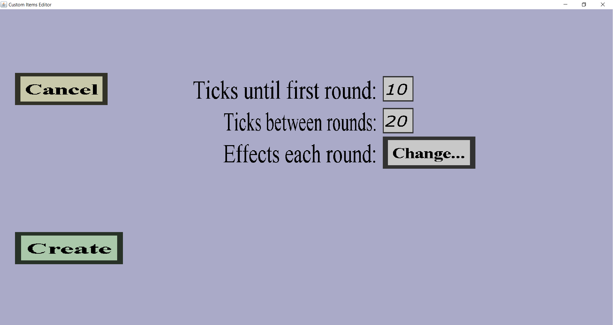

The effect wave edit menu can be used to modify a wave of projectile effects.
A projectile effect wave has a period and a list of projectile effects that will be performed each period.
If you just started creating a new effect wave, it should look like this:

There should be a 'Cancel' button and an 'Apply' or 'Create' button.
Also, there should be edit fields for the ticks until first round and ticks between rounds.
Finally, there should be a 'Change...' button to choose which projectile effects to perform.
-
The 'Cancel' button will take you back to the effect wave overview you came
from without keeping any changes or adding the new effect wave to the list.
-
If you are editing an existing projectile effect wave, there will be an 'Apply' button which will take
you back to the effect wave overview you came from while keeping all changes
you made in this menu.
-
If you are adding a new projectile effect wave, there will be a 'Create' button which will take
you back to the effect wave overview you came from and add this new projectile
effect wave to the list of effect waves.
-
The 'Ticks until first round' edit field can be used to determine the time between firing the projectile and
the first time the projectile effects are applied (in ticks, 1 second = 20 ticks).
This is for instance very useful for explosion effects: you probably don't want the projectile to explode right
after it is launched (which is what would happen if this field didn't exist or you give it the value 0).
If you keep the value at 10, the effects will be performed for the first time half a second after the projectile
was launched.
-
The 'Ticks between rounds' can be used to determine how often the effects will be performed.
To explain what this means, consider the example where the 'Ticks until first round' is 40 and
the 'Ticks between rounds' is 20. Then 2 seconds (40 ticks) after launch, the effects of this
effect wave will be performed for the first time. Then 1 second later (20 ticks), the effects
will be performed for the second time. 1 second thereafter, the effects will be performed for
the third time.
-
The 'Change...' button can be used to choose the effects to be performed by this effect wave.
It will take you to the effects overview, where you can choose
which list of effects to perform.